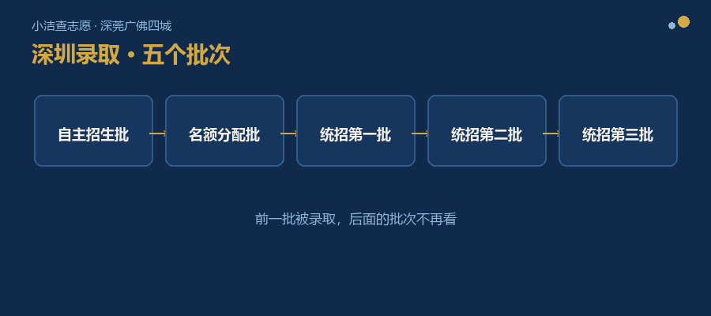

每次给家长讲志愿方案，讲到一半，我常会停下来问一句：
几乎每一次，都有人点头。
他们给我的理由都差不多——不是不想搞明白，是真的没有那个时间和精力。
白天上班，晚上回家还要盯孩子写作业。一天里能腾出来做功课的时间，就是下班路上那四五十分钟，和临睡前那半个钟头。
而志愿填报表，偏偏是在孩子成绩还没出来的时候就要填。
第一处，是那些词。
名额分配、ACD 类（考生按户籍和政策身份分 A、C、D 三类，能报的学校范围不一样）、控制线、自主招生、统招第一批……
每一个字都认识，连在一起就不知道在说什么。
最麻烦的还不是词多，是同一个东西还有两个名字：前些年叫“指标生”，现在叫“名额分配”。两个说法都听过的家长，很容易以为是两件不同的事。
第二处，是顺序。
深圳的录取分五个批次，一个接一个：自主招生批 → 名额分配批 → 统招第一批 → 统招第二批 → 统招第三批。

深圳录取五批次：自主招生批 → 名额分配批 → 统招第一批 → 统招第二批 → 统招第三批
这五步的先后不能乱。而且前一批被录取了，后面的批次就不再看了。
顺序记错一步，后面的判断全跟着偏。
第三处，是数据。
历年的录取分数线，本身就好几种：住宿和走读是一个数，A 类、C 类、D 类又是一个数。中考总分这些年也改过——以前是 610，现在是 630。那前几年的线，今年还能不能直接拿来对照？
这个问题，要看具体年份和批次，不是一句话能说清的。
再往下，还有每所学校招多少人、名额分配分到多少、民办学校一年学费多少……
这些数字散在好几份文件、好几张表里。
要开始做判断，先得把它们收齐——可“收齐”这件事本身，就得花掉好几天。
为了给一位家长核一条线，我把几年的数据摊在一起对了一遍。光把意向学校的各种数据整合起来，一位从零开始的家长，一个下午都未必够——而这，还只是一部分学校。
第四处，是学校。
深圳这么多高中，家长想知道的无非是几件事：这所学校什么水平、管理严不严、离家远不远、能不能住宿、去年大概多少分能进。
可这些信息没有一份现成的完整介绍。有的官网更新到两年前，有的公众号只发喜报，家长群里问一句，三个人给三个说法。想弄明白一所学校，往往要拼好几个来源。
第五处，是外面那些说法。
同样一件事，能听到好几种说法：哪个是官方口径，哪个是别人推算的，一眼看不出来——没标出处的，不敢信；标了出处的，对不上原文。
说得出处的，才值得信。这一处，值得单独拿出来讲，后面我会专门写一篇。
五处卡点：词、顺序、数据、学校、说法
把这五处摆在一起，我想说的其实是一件很朴素的事：
前两处，是绕；后三处，是散。
政策本身没有多深奥——单拎出任何一条，慢慢讲都能听懂。
难的是：你要在同一段时间里，同时接住术语、顺序、好几年的数据、几十所学校，还有一堆互相打架的说法。
而那段时间，是你下班之后、孩子睡下之后，挤出来的那一两个钟头。
这几年找我聊志愿的家长，主要来自四座城市——深圳、东莞、广州、佛山。这篇先从深圳讲起。
在深圳是这样；换到东莞、广州、佛山，规则另有一套，但那种“东西太多、不知道从哪下手”的感觉是一样的。
这不是哪一位家长不够上心，是每一个第一次填志愿的家庭，都要一起过的关。
所以我们在做的那件事——那个准备叫 HSEE 择校助手的东西——说到底就一句：把这五处，替家长先过一遍。
摆在一起看，我有个判断：它们不是五个问题，是同一个问题的五个面——信息，从来没有为要用它的人组织过。
每一份文件、每一张表，都是为“办事”写的，不是为“做选择”写的。所以它准确，但不好用。
如果这个判断成立，那答案就不该是“把五处都补上”——那只会让东西更多。
我的想法是：按家长做决定时一步一步会问到的问题，把该有的东西排在他眼前。不按文件的门类排，按他要做的那个判断排。
至于“他自己看得懂”和“直接给他判断”，这两件事不冲突——先让他一眼看明白，判断再说。
而这件事，你现在就能用上：这五处，可以当成一把尺子。
以后再拿到一份志愿资料、一张表、一段别人给的“经验”，照这五处过一遍就行——
它在跟我绕词吗？顺序讲清楚了吗？数据给了几条线、是哪一年的？学校信息是拼来的还是查来的？每个说法，说得出出处吗？
五处都对得上，那份东西才值得你花那个晚上。
如果你手上有拿不准的材料，也可以发给我——我帮你按这五处过一遍。